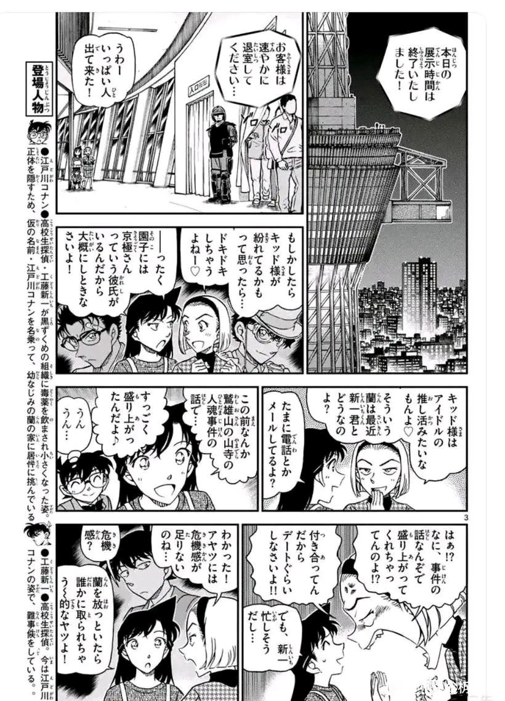

第一次写分析文，而且渣手机码字不容易，更新会有点慢，也会有点乱，望谅解

众所周知，兰是很排斥与新一讨论侦探相关的事，无论是安利福尔摩斯，还是评论复盘案件等，兰总是不耐烦的态度，而这次相对平平无奇的案件，她居然与新一聊得热火朝天，加上后面柯南一脸甜蜜的肯定，这很难让人不觉得事出反常必有妖，所以我打算把这种违和感拿出来谈谈，就当是不吐不快吧，毕竟我不是啥分析大神，如果有不同意见的可发表，大家讨论讨论
这里先说上一个故事明面上最独特的几个点
1.和叶那句以为新兰已经黄了
2.这件事的起因是兰想当红娘，当时柯南也认为兰的做法没问题，然而平和的不按常理出牌让柯兰二人同时豆豆眼
3.面对兰的小珍珠柯南居然不为所动
然后就是有人分析出来的“阴谋论”
和叶对兰的第六感已经有些厌恶，兰假传圣旨打算以大压小反被和叶压了回去，这个打击对兰来说可说是个不小的打击
1.和叶那句以为新兰已经黄了
2.这件事的起因是兰想当红娘，当时柯南也认为兰的做法没问题，然而平和的不按常理出牌让柯兰二人同时豆豆眼
3.面对兰的小珍珠柯南居然不为所动
然后就是有人分析出来的“阴谋论”
和叶对兰的第六感已经有些厌恶，兰假传圣旨打算以大压小反被和叶压了回去，这个打击对兰来说可说是个不小的打击
由于上一个案件不涉及情爱，对兰来说是毫无讨论的必要，但她与新一能聊得热火朝天，我能想到的原因有2:
1.两人更多的是谈及平和
2.兰有了危机感，只能迫使自己与新一讨论案件
1.两人更多的是谈及平和
2.兰有了危机感，只能迫使自己与新一讨论案件
2023-11-07 23:47 | nusuaihxi:同时，柯南也经历了上次的事件，比小兰知道的更多，小兰就是全程出丑，有什么理由聊案件聊的火热，这只是一个障眼法，两人聊的是案件同时发生的平和的感情问题，呼应上一篇结尾两人的豆豆眼，只能说，刚圣，又呼应了雪梨研究所灰原那句某人对恋爱一窍不通而不自知，完美地肢解新兰底层逻辑
先来说说分析一。作为好兄弟，柯南也是关心平次的情感发展，也默认（或者说是默许？)这个计划，不然他也不会一脸骄傲地心想“为你准备的舞台”（大概），然后被平和意料之外的发展搞得一头雾水。这证明柯南（新一）对感情方面是迟钝到失算，尤其现阶段的他已经是柯导，制作计划算无遗策，无往不利，他对人性、人心的揣摩是很精准的，但唯独爱情以及相关的人情世故，他就经常失算。基于这两点，他会与兰讨论这件事，而且二人相谈甚欢，也不是没有可能。他在后面一脸甜蜜笑地嗯嗯，证明他和兰确实聊得很不错。在此之前，好像也没有这样的刻画。如果真的是第一次，那是不是侧面印证这是新兰第一次观念一致地讨论某些事情且让新一对于和兰的相处有别样的体验呢？
正解，这就是真相
2023-11-03 06:37 | 降谷零的愛妻:也不能说是真相，毕竟我不是分析大神，四小漫画还未完结，一切只是推nao测dong

然后就是原因二。红修篇兰已经知道了冲田护身符的力量，现在更体验到平和护身符的作用，加上和叶一句“以为你们已经黄了呢”，接二连三的打击让兰不得不审视自己与新一的状况。虽说她已经有名分了，但为什么没有那些无名分的人来得甜蜜呢？说兰不羡慕平和那种状态是假的，所以哪怕是拙劣的模仿，还是真的尝试理解新一，都让兰做出了破天荒的一件事，就是和新一讨论案件
赶上直播了吗 加油 爱看
加油 爱看
加油 爱看2023-11-03 06:37 | 降谷零的愛妻:更新了呢2023-11-10 08:24 | 我的瑱呐😞:回复 降谷零的愛妻 :第一眼谷20的娇妻

楼主得去搬砖了，晚上继续码字
如果大家有什么看法也可以留言，欢迎大家理性交流讨论
如果大家有什么看法也可以留言，欢迎大家理性交流讨论
我也有几点感想，首先可以看得出来，小柯也是渴望和另一半有共同话题的，其次小兰听了和叶的话后，可能有危机感了，还有毕竟还是处于恋爱蜜月期，所以说小兰尝试一下改变自己迁就新一也挺正常的，但是小兰到底能有多少耐心来迁就新一就不好说了
2023-11-03 06:38 | 降谷零的愛妻:如果73真的想刻画兰改变自己迁就新一咋就这么做了，没必要还在埋雷2023-11-03 07:29 | 随意♬飘荡:回复 降谷零的愛妻 :因为这根本就不是小兰真心想改变自己的，她只是暂时有危机感而已，而且她也有可能是短时间勉强自己来迁就新一，后续她应该会认清现实的，强扭的瓜不甜。
蹲
新一第一次在兰身上获得情绪价值，他甜蜜得不得了，但这个情绪价值的背后是对方的危机感不安全感，这种错位的节奏真的很讽刺。再加上最新一话里还有第三个第一次:基德第一次（在漫画里）假扮新一，看来73是准备搞事情了
与麻美学姐提出初恋容易褪色的下一话就是灰原哀出场不同，这次通过兰说出上一个故事之后与新一聊得很好，证实这一话与上个故事是有关联的，有因果关系的
基于上一个故事推导出来的兰的危机感，结合园子立马提出新一没有危机感，再看情绪价值的错位，73你是故意的还是不小心？
说回兰的危机感。当园子气冲冲地说着“哈？！干嘛聊案件聊起劲啊？！既然交往了起码要去约会吧！！”，兰是露出尴尬的笑，且脸上挂着汗珠，用着不确切的语气说到“可是，新一好像很忙…”。说实话，别说新兰青梅竹马十三年，交往也有一段时间，而且还就这案件聊得挺起劲，怎么对于新一的现状却这么不清晰？不求兰知道新一在忙什么，有没有吃好睡好啥的，连忙不忙，她都是不确定，用的“好像很忙”。哪怕真的不知道，面对别人的质疑，兰大可以直接说“可是新一他真的很忙”，园子估计也不好再说什么。但兰却很暧昧地回答“好像很忙”，言下之意就是新一的锅新一的错？？？所以说，对于新兰现状，兰是真的心虚得不行，无论她有没有意识到，危机感肯定很满
当园子说什么“能不能突然出现啊，会让新一嫉妒的好男人~”，兰没有予以反驳，也没有明确制止园子胡说八道，而是说这一句不知是维护新一还是火上加油的“我倒觉得新一是不会嫉妒的…”。代入一下，如果你听到两个小姐姐的这段对话，你会觉得是那个男的不在乎那个女的，还是说那个男的对女友对这段关系足够自信？结合兰的表情，依旧是尴尬的笑容，脸上还挂着汗珠，不知道她是无语，还是强忍怒火，还是心虚。但新一本人，腹诽的关键词却只是侦探而不是危机感、抢走小兰、嫉妒好男人等，可见明面上说的是新一没有危机感，其实他才是最没危机感的那个，反而是兰，要不是有突发情况，园子再输出一波，她的荔枝还能不能安好
之前不少大神分析过兰一直安全感缺失以及吃代餐，但73没有直接表态，最多也就一句“兰寂寞了”。剧场版可以用平行世界、番外、同人来解释，如今在漫画中，73把危机感（安全感）这个问题挑明不说，还十分配合地拉上基德在漫画中假扮新一，好男人侦探白马探再度登场，甚至春秋笔法地阴阳了一把新兰关系。73，你解构（）的刀子终于举起来了么？
再来一个脑洞吧。园子有时候是73的嘴替，明明兰和新一二人聊得开心（实则是兰第一次给与新一情绪价值)，应该是感到高兴的，她却一盆冷水泼下来，是在暗喻兰的努力是徒然吗？看回上一话明明官宣应该是祝福的，换来居然是和叶的“以为你们黄了”，接连打脸兰姐，73不愧是封神榜首位
我觉得聊案件是因为这件事是她爸遭遇的事情，就相当于在说自己的事情，并不是说去讨论什么案件，没啥违和的，当事不关己了兰神就会高高挂起了
2023-11-03 07:31 | 降谷零的愛妻:2023-11-03 07:34 | 桃夭🍒🌿:这样不是更小丑了吗？爸爸遇到这种事还能聊得这么嗨，事后回想还带脸红，不愧是忘记了找爸爸的大孝女
回复 降谷零的愛妻 :她不一直这样吗，我只是觉得没什么违和感，这就相当于她在分享自己经历的事，这就很符合她人设了2023-11-03 07:45 | 降谷零的愛妻:回复 桃夭🍒🌿 :推理宅警告2023-11-09 04:37 | 奥斯丁格理芬:很有道理

还有很神奇的一点，园子花痴基德，兰的眼神是带着严厉和一丝嫌弃，提醒园子还有阿真。但是园子吐槽新兰关系，以及说巴不得来个能抢走兰的好男人侦探的时候，兰还能保持尴尬的微笑，这就很耐人寻味。毕竟哪怕作为闺蜜，园子的这番话是很失当的，但兰没有阻止园子花痴基德那样阻止园子继续胡说八道，是别人的男友比自己的男友更重要吗？
2023-11-04 07:14 | 洛菲斯♬:没毛病，基德代餐就比新一正餐好吃2023-11-04 08:05 | 降谷零的愛妻:回复 洛菲斯♬ :男朋友很少联系没所谓，代餐被闺蜜花痴就不行2023-11-10 08:25 | 我的瑱呐😞:这不就是代入派的最爱吗代餐自助


别的不确定，但应该要开始卖探兰了
2023-11-04 08:04 | 降谷零的愛妻:所以是扒兰的皮还是让白马探像本堂瑛佑那样喜欢了兰又下线，不好说2023-11-04 08:41 | neon年年:回复 降谷零的愛妻 :目的是小柯吃醋，行为怎么样应该不重要（探喜欢兰应该不可能，因为探女友粉更多一些）2023-11-04 12:23 | 夜城城主官方:这种事情不要啊啊啊啊（探厨落泪）2023-11-05 12:58 | wanneupo:黃昏之館除了原本跟槍田小姐的戲被嫁接給蘭以外根本沒互動，少在那邊瞎扯喜歡了2023-11-06 01:10 | 一颗鱼丸不要面:回复 降谷零的愛妻 :白马在隔壁是对红子有好感的
上个案子里兰跟柯南唯一能对上电波的就是平和的告白了吧，所以所谓的聊案子怕不是在吐槽平和
2023-11-06 06:06 | 降谷零的愛妻:新一（柯南）唯一没有成长的就是感情，可以说这是他成长的最后一个拼图。等他开窍了，（）也可以完了
和叶酱：兰酱，你吃点好的，别总吃代餐！
2023-11-06 20:56 | 降谷零的愛妻:问题是好的不是有对象（如平次冲田)就是没对象也轮不到她（秀一），甚至不想也不能给对象（透子），除了新一能有点看头的就本堂瑛佑，但某些群体性又看不上啊
这种东西不能小看，日后肯定有回收
身为一个路人，并不想着最后啥CP，但是一直觉得新兰别扭尴尬。和自己的感情经验也有关，看见这个帖子说两句。我为我那位毛利兰的相处不顺，心累地分析了很多，最后结论就是很简单粗暴：智商配不上我，果断分手。
其实他也清楚，表现就是，有劣等感又不甘心，就会有意识无意识给对方添堵泼冷水；可能偶尔发生点让他觉得自己又行了的事儿，心情好了展现点善意。但是其实知道自己还是不行的，很快恢复到常态。
兰一直知道他的精神世界，说得难听但是直白，就是智商和自己不在一个层次，所以平时有意无意在他精神世界核心的侦探方面泼冷水，表现出“有啥了不起么”，而新一并没有意识到这种不认可中的PUA性质，以前开口和她说这些事儿潜意识，提前就觉得不会愉快。
现在实质交往了，她心态暂时稳了一些，所以就能以正常心态讨论了，新一和以前一样等冷水，而这一次“居然”可以在这个话题上和她谈得这么愉快，有人听自己说话确实是非常是开心的。
其实很像危命里，新一少见的主动而且高规格地约她这个事实一时得到了安心感，所以能够对新一跑去查案，表现难得的让人愉快的态度。
而实际俩人精神世界的差异并没有真的拉近，只是既成事实的交往给兰一时间的安全感，今后还是会继续磨损内耗下去。
柯哀嘛，他俩智商是一个层次的，交流无障碍无内耗，我真是路人，一点不在乎CP，但是看他俩你来我往就是挺愉快，愿意看。
其实他也清楚，表现就是，有劣等感又不甘心，就会有意识无意识给对方添堵泼冷水；可能偶尔发生点让他觉得自己又行了的事儿，心情好了展现点善意。但是其实知道自己还是不行的，很快恢复到常态。
兰一直知道他的精神世界，说得难听但是直白，就是智商和自己不在一个层次，所以平时有意无意在他精神世界核心的侦探方面泼冷水，表现出“有啥了不起么”，而新一并没有意识到这种不认可中的PUA性质，以前开口和她说这些事儿潜意识，提前就觉得不会愉快。
现在实质交往了，她心态暂时稳了一些，所以就能以正常心态讨论了，新一和以前一样等冷水，而这一次“居然”可以在这个话题上和她谈得这么愉快，有人听自己说话确实是非常是开心的。
其实很像危命里，新一少见的主动而且高规格地约她这个事实一时得到了安心感，所以能够对新一跑去查案，表现难得的让人愉快的态度。
而实际俩人精神世界的差异并没有真的拉近，只是既成事实的交往给兰一时间的安全感，今后还是会继续磨损内耗下去。
柯哀嘛，他俩智商是一个层次的，交流无障碍无内耗，我真是路人，一点不在乎CP，但是看他俩你来我往就是挺愉快，愿意看。
2023-11-09 03:39 | 无羽毛二足动物:为一个其实不关心的党争打这么多，其实也真的是感觉这一段新兰的心态太真实了，我不用做分析，就是切身的体会，青山是真的抓过感情袍子上这些虱子的，不是所谓的搞CP搞事情。2023-11-09 03:46 | 无羽毛二足动物:哦对，其实比起“泼冷水”，更准确的说法是“阴阳怪气”2023-11-09 03:56 | 降谷零的愛妻:回复 无羽毛二足动物 :也不是党争与否，而是毛利兰这样的人在现实生活中真的很难顶。以前有个朋友，男版毛利兰来的，经常嘲讽我学习啊考证啊，都是没用的东西，还不如乖乖上班的好。所以了解到新兰的故事，真的如鲠在喉如芒在背2023-11-09 04:00 | 降谷零的愛妻:回复 无羽毛二足动物 :与其说阴阳怪气，倒不如是73直接告诉读者:别怂，虚火来的2023-11-09 05:07 | 无羽毛二足动物:回复 降谷零的愛妻 :对，和cp无关，和这种有劣等感又不承认的人相处就是坐牢。看见别人积极努力走运，嘴巴一撇“有什么了不起”；看见别人摆烂倒霉吃瘪，眼睛一亮“说这个我可就不困了”。不是故意的，就跟啮齿动物磨牙一样，本能。2023-11-09 05:13 | 降谷零的愛妻:回复 无羽毛二足动物 :就是，ta们不会自己去进步，而是把优秀的人变得平庸。一辈子不离不弃也算了，当这种人有一点成功，就会立马看不起那些被ta们拖累的人了2023-11-09 06:44 | 沉梦昂志am🐼:回复 无羽毛二足动物 :不想进步 不想改变 太符合兰character2023-11-09 07:03 | 降谷零的愛妻:回复 沉梦昂志am🐼 :越自卑越自大呗

个人见解，有没有一种可能，聊得案件有没有可能是这整件事的经过和结果，就像聊旅游一样。还有可能其实在跨服聊天。